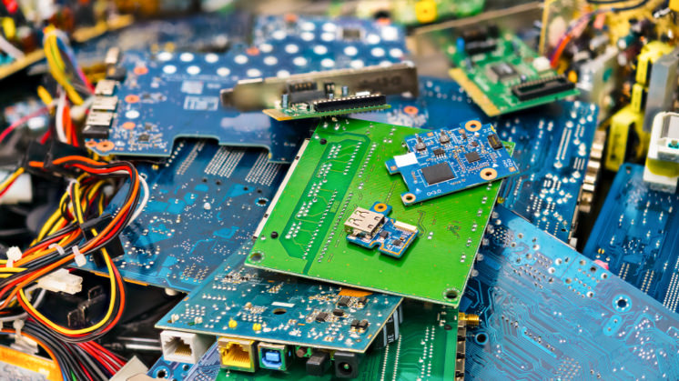
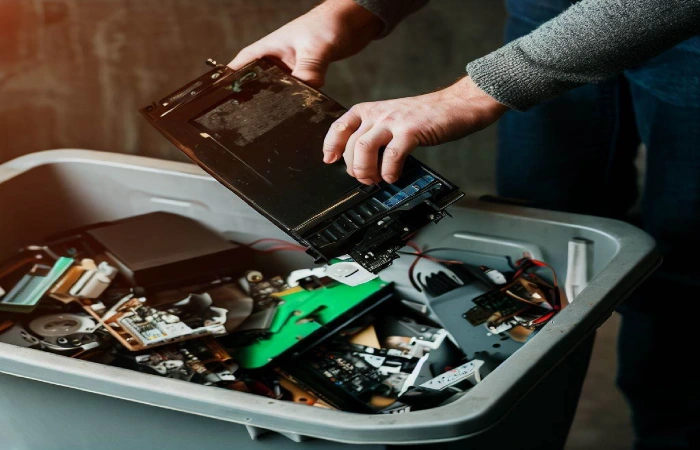
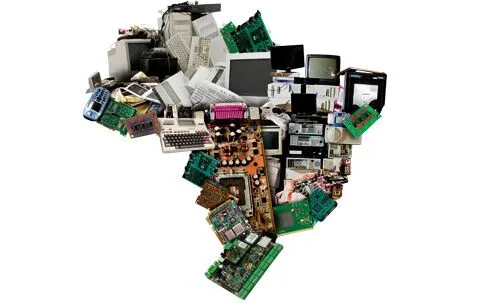
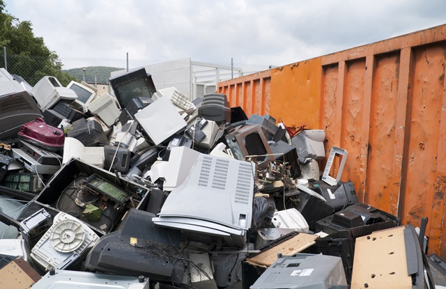

Descarte Correto do Lixo Tecnológico
  Por Que o Descarte Correto é Essencial?
O descarte correto do lixo tecnológico é fundamental para proteger o meio ambiente e a saúde humana. Equipamentos eletrônicos possuem substâncias tóxicas, como chumbo, mercúrio e cádmio, que, se lançadas ao solo ou à água, podem contaminar ecossistemas e comprometer a qualidade de vida de animais e pessoas. Além disso, quando descartados de maneira incorreta em lixões ou aterros comuns, esses materiais não se decompõem facilmente, permanecendo no ambiente por séculos.

Descarte responsável significa direcionar os resíduos eletrônicos para locais onde eles serão tratados, desmontados ou reciclados de forma segura. Isso também permite que os materiais reutilizáveis — como cobre, ouro e plástico — sejam reaproveitados, diminuindo a necessidade de extração de novos recursos naturais.
Impactos do Descarte Irregular
Quando o lixo eletrônico é jogado em locais inadequados, como terrenos baldios, margens de rios ou até mesmo no lixo doméstico, os riscos são imediatos e duradouros. Os metais pesados presentes nesses resíduos penetram no solo, alcançam lençóis freáticos e podem contaminar a água potável. Em áreas urbanas, isso representa uma ameaça direta à saúde pública.
Além da poluição ambiental, o descarte incorreto também contribui para problemas sociais. Em muitos países em desenvolvimento, toneladas de lixo eletrônico são enviadas ilegalmente, criando verdadeiros "cemitérios eletrônicos" onde pessoas, inclusive crianças, trabalham de forma precária para extrair metais preciosos, muitas vezes sem proteção adequada e expostas a substâncias cancerígenas.
O Que Fazer com o Lixo Eletrônico?
O primeiro passo é não descartá-lo no lixo comum. Em vez disso, é importante procurar pontos de coleta específicos. Muitas cidades contam com ecopontos ou campanhas periódicas de recolhimento de eletrônicos. Algumas empresas também disponibilizam locais de entrega voluntária, onde os aparelhos são destinados ao reaproveitamento ou reciclagem adequada.
Outra opção é entrar em contato com os fabricantes. A Política Nacional de Resíduos Sólidos (Lei nº 12.305/2010) prevê a responsabilidade compartilhada pelo ciclo de vida dos produtos, o que significa que fabricantes, distribuidores e comerciantes devem oferecer alternativas de coleta para seus produtos após o uso.
Exemplos de Locais de Descarte
Postos de coleta podem ser encontrados em cooperativas de reciclagem, escolas, supermercados, shoppings e órgãos públicos. Também existem ONGs e projetos sociais que recebem equipamentos antigos, mesmo que quebrados, para reaproveitamento ou reciclagem.
Alguns programas conhecidos no Brasil incluem:
|
Antes de descartar, sempre verifique se o local é confiável e se os equipamentos serão tratados com segurança ambiental e responsabilidade social.